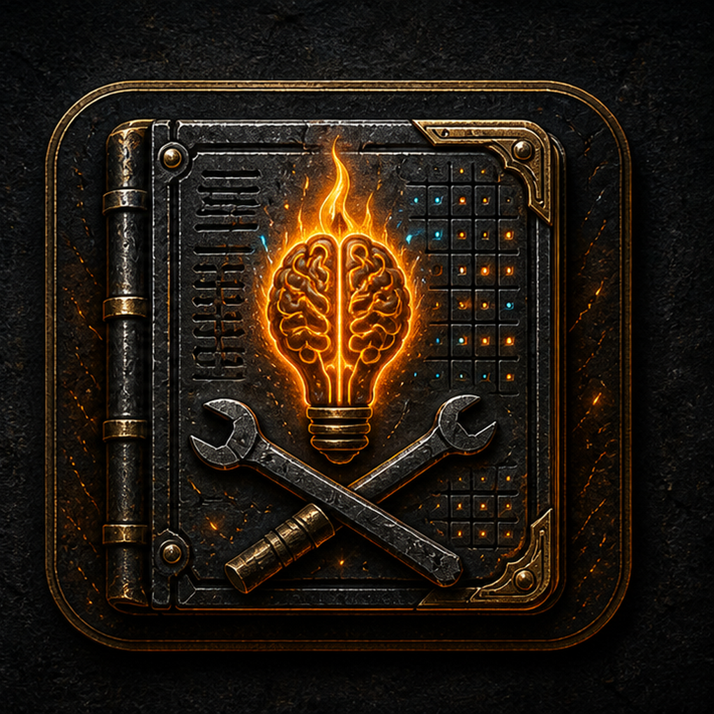
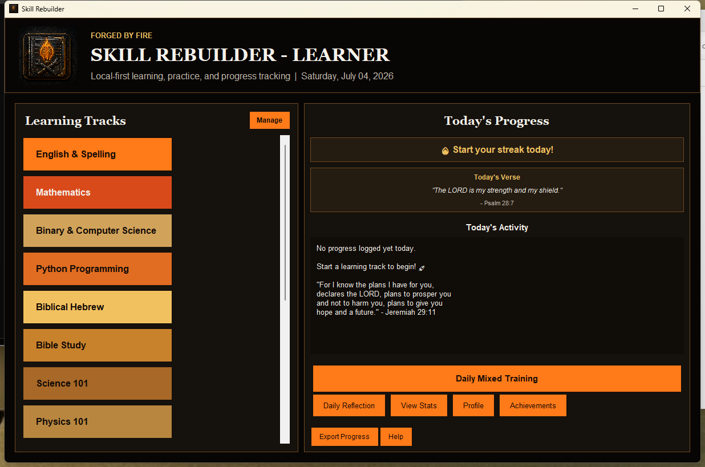
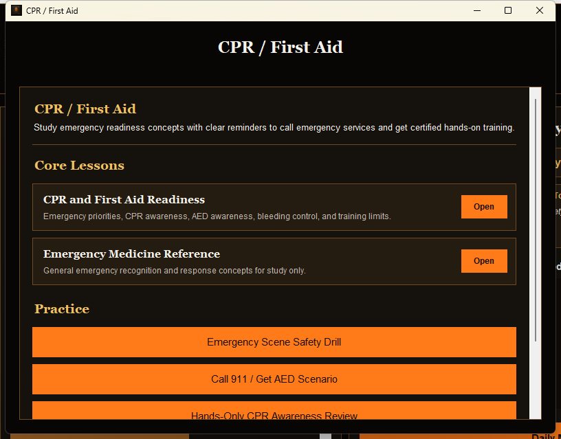

Fifteen Tracks
Practice English, math, binary, Python, Hebrew, Bible study, science, physics, games, welding, Greek, piano, CPR / First Aid, calculus, and general knowledge.

Free local-first learning and practice app
Skill Rebuilder bundles lessons, practice tracks, progress tracking, achievements, and optional local AI tutor feedback into one private Windows desktop app.
Practice English, math, binary, Python, Hebrew, Bible study, science, physics, games, welding, Greek, piano, CPR / First Aid, calculus, and general knowledge.
Every track includes core lesson material from the bundled knowledge vault, so the app is useful offline after download.
Track daily sessions, streaks, exercise completion, achievements, and exportable progress reports from the local database.
If Ollama is running locally, Skill Rebuilder can ask a local model for short tutor feedback. The app still works without it.


Version 1.0 includes at least three core lessons and at least five practice items for every visible track. Some tracks have custom quiz screens, while others use guided practice prompts with completion tracking.
Learning material includes programming references, math and calculus foundations, music theory, piano, welding, CPR / First Aid readiness, astronomy, physics, chemistry, electronics, robotics, history, survival, finance, Hebrew, Greek, and broad knowledge practice.
Version: 1.0.0
Platform: Windows desktop app
File: Portable ZIP, 34.5 MB
Cost: Free
How to run: Download the ZIP, extract it, then open Skill Rebuilder.exe.
Privacy: Progress is stored locally in the extracted app folder. There is no account system or cloud sync.
Skill Rebuilder is new and not code-signed yet, so Microsoft Defender SmartScreen may warn that it is not commonly downloaded. Only continue if you started the download from cmforgedbyfire.com or the official cmforgedbyfire GitHub release.


CPR / First Aid: The CPR / First Aid track is educational only. In a real emergency, call emergency services, use an AED if available, follow dispatcher instructions, and seek certified hands-on training.
AI tutor: Local tutor feedback requires Ollama running on the same computer. No online AI account is required.
Feedback: Use the support page with the track you tested, what helped, and where the practice flow should improve next.